Major Cities and Urban Centers
Ahmedabad
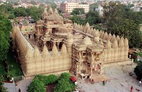
Explore the vibrant city of Ahmedabad with its historical sites and cultural landmarks.
Vadodara
Discover the historical and cultural richness of Vadodara, a city of royal heritage.
Surat
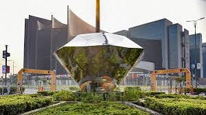
Visit Surat, known for its vibrant culture and beautiful beaches.
Rajkot
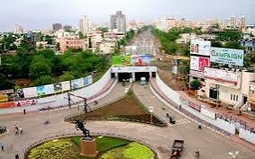
Experience the charm of Rajkot with its rich history and local attractions.
Bhavnagar
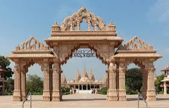
Bhavnagar offers a blend of historical temples and beautiful parks.
Heritage and Historical Sites
Dwarka
Discover the ancient city of Dwarka, famous for its temples and spiritual significance.
Somnath
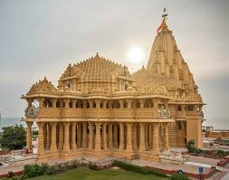
Somnath is renowned for its historic temple and sacred pilgrimage spots.
Patan
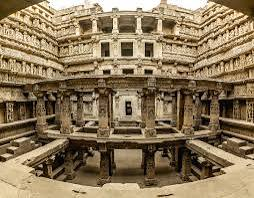
Visit Patan to see the UNESCO World Heritage Site of Rani ki Vav and other historical sites.
Champaner-Pavagadh
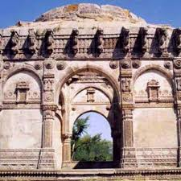
Explore the Champaner-Pavagadh Archaeological Park, a UNESCO World Heritage Site with historical ruins.
Junagadh
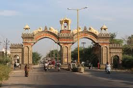
Junagadh offers historical forts, temples, and the scenic Girnar Hill.
Wildlife and Nature
Gir National Park
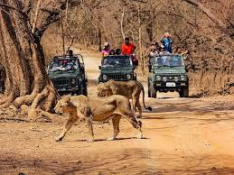
Home to the Asiatic lions, Gir National Park offers a unique wildlife experience.
Great Rann of Kutch

Visit the Great Rann of Kutch for the stunning white desert and the Rann Utsav festival.
Little Rann of Kutch

Explore the unique salt pans and wildlife sanctuary of the Little Rann of Kutch.
Blackbuck National Park
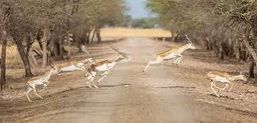
Visit Velavadar to see the Blackbuck National Park, home to herds of blackbucks.
Marine National Park
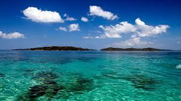
Explore the Gulf of Kutch and its marine life at the Marine National Park.
Beaches and Coastal Areas
Diu
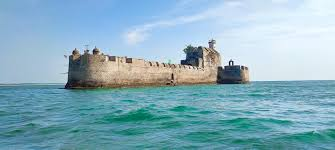
Diu offers serene beaches and historic sites in a picturesque coastal setting.
Mandvi
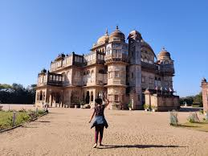
Enjoy the sandy beaches and historical Vijay Vilas Palace in Mandvi.
Porbandar
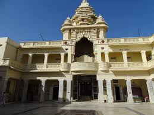
Porbandar is known for its historical significance and beautiful beaches.
Tithal Beach
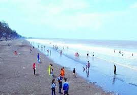
Tithal Beach offers a peaceful retreat with beautiful sandy shores and temples.
Pilgrimage Sites
Palitana
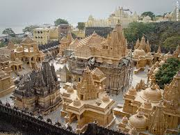
Palitana is famous for its Shatrunjaya Hill with Jain temples.
Dwarka
Dwarka is an important Hindu pilgrimage site known for the Dwarkadhish Temple.
Ambaji
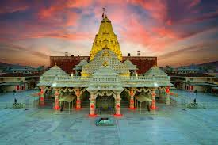
Ambaji is known for the famous Ambaji Temple, a significant pilgrimage site for Hindus.
Shamlaji
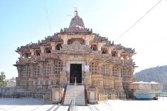
Shamlaji is known for its ancient temple dedicated to Lord Vishnu.
Other Notable Attractions
Statue of Unity
The Statue of Unity is the tallest statue in the world, dedicated to Sardar Vallabhbhai Patel. It is located near the Sardar Sarovar Dam.
Modhera Sun Temple
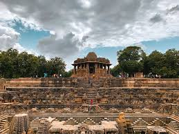
The Modhera Sun Temple is an ancient sun temple dedicated to the solar deity Surya, known for its impressive architecture.
Saputara
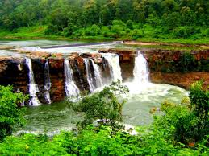
Saputara is a picturesque hill station with attractions like Saputara Lake and Sunrise Point.
Hemispherical Dome
.jpg)
The Hemispherical Dome is a science city in Ahmedabad featuring interactive science exhibits.
Dholavira
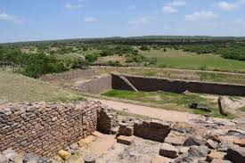
Dholavira is an ancient Harappan site with excavated ruins from the Indus Valley Civilization.
Lothal
.jpg)
Lothal is an archaeological site known for its ancient dockyard and ruins from the Indus Valley Civilization.
Cultural Attractions
Bhuj
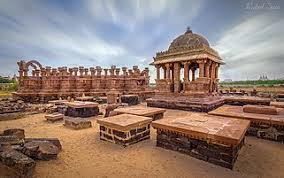
Bhuj offers attractions like Prag Mahal, Aina Mahal, and Bhujia Hill, showcasing the rich cultural heritage of Gujarat.
Chhota Udepur
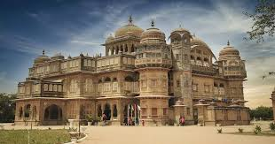
Chhota Udepur is known for its tribal villages and vibrant cultural experiences.
Gandhinagar
Gandhinagar is home to the Akshardham Temple and Indroda Nature Park, offering spiritual and natural attractions.
Festivals and Events
Navratri
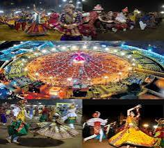
Navratri is celebrated across Gujarat with traditional Garba and Dandiya dances, showcasing vibrant cultural festivities.
Kite Festival (Uttarayan)
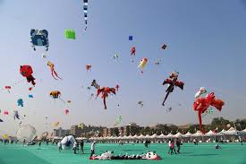
The Kite Festival, or Uttarayan, is an international event in Ahmedabad where people gather to fly colorful kites.